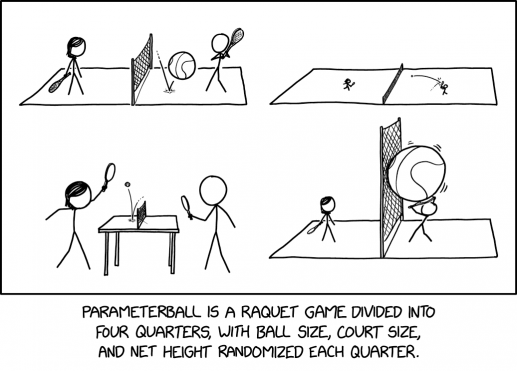

Lesson 6: Discrete Distributions of Random Variables

Calendar
Day 1
Day 2
Updates
DMath Frisbee Update
Math 1 vs Math 2
Previously 1-0
2-0

Army Football / Reese
Cal
Milestone 2 Recap
- Lets render a document
- Don’t forget Annex B
Discrete Distributions of Random Variables
Not that type of discrete random variable…
A random variable is a rule (or function) that assigns a number to each possible outcome of a random process.
- Discrete random variable: takes on a countable set of values (like dice rolls, coin flips, number of emails received in a day).
- Continuous random variable: takes on values from an interval or continuum (like height, time, or temperature).
Determine the probability distribution of a discrete random variable
Let \(X\in\{1,2,3,4,5,6\}\) be the points shown on one fair die roll.
| \(x\) | 1 | 2 | 3 | 4 | 5 | 6 |
|---|---|---|---|---|---|---|
| \(P(X=x)\) | \(1/6\) | \(1/6\) | \(1/6\) | \(1/6\) | \(1/6\) | \(1/6\) |
\[ P(X=x) = \begin{cases} \dfrac{1}{6}, & x=1, \\[6pt] \dfrac{1}{6}, & x=2, \\[6pt] \dfrac{1}{6}, & x=3, \\[6pt] \dfrac{1}{6}, & x=4, \\[6pt] \dfrac{1}{6}, & x=5, \\[6pt] \dfrac{1}{6}, & x=6, \\[6pt] 0, & \text{otherwise}. \end{cases} \]
Calculate the expected value of a discrete random variable
The mean or expected value of a discrete random variable refers to the long-run average value of the random process if the process is repeated indefinitely under identical conditions. The mean of the random variable is a weighted average of the possible values the random variable can take, weighting each outcome according to its probability:
\[ \mu_X = E[X] = \sum_x x \cdot P(X=x). \]
\[ E[X] = 1\cdot\tfrac16 + 2\cdot\tfrac16 + 3\cdot\tfrac16 + 4\cdot\tfrac16 + 5\cdot\tfrac16 + 6\cdot\tfrac16 = \tfrac{21}{6} = 3.5. \]
Interpret the expected value of a discrete random variable
Over many rolls, the long-run average face value is \(3.5\) (even though no single roll shows \(3.5\)).
Calculate the variance and standard deviation of a discrete random variable
The variance of a discrete random variable measures the average squared deviation from its mean: \[ \mathrm{Var}(X)=\sum_x (x-\mu_X)^2\,P(X=x) \] and the standard deviation is \[ \mathrm{SD}(X)=\sqrt{\mathrm{Var}(X)}. \]
\[ \mathrm{Var}(X)=\left(1-3.5\right)^2\cdot\tfrac16 +\left(2-3.5\right)^2\cdot\tfrac16 +\left(3-3.5\right)^2\cdot\tfrac16 +\left(4-3.5\right)^2\cdot\tfrac16 +\left(5-3.5\right)^2\cdot\tfrac16 +\left(6-3.5\right)^2\cdot\tfrac16 =\tfrac{35}{12} \]
\[ \mathrm{SD}(X)=\sqrt{\tfrac{35}{12}}\approx1.7078. \]
Interpret the variance and standard deviation of a discrete random variable
Example A — Fair die
Larger variance/SD indicates outcomes are more spread out around the mean; smaller variance/SD indicates the outcomes are more tightly clustered.
Because most values of a distribution tend to fall within about two standard deviations of the mean, we would expect nearly all rolls to land between about \(3.5 - 2(1.71)\approx0\) and \(3.5 + 2(1.71)\approx7.0\). Since the die only takes values \(1\) through \(6\), this tells us practically all the possible outcomes fall within that range around the mean.
Probability Questions
Probability that \(X \leq 2\)
\[ P(X \leq 2) = P(X=1) + P(X=2) = \tfrac{1}{6} + \tfrac{1}{6} = \tfrac{2}{6} = \tfrac{1}{3}. \]Probability that \(X\) is less than one standard deviation above the mean
- Mean: \(\mu = 3.5\)
- Standard deviation: \(\sigma \approx 1.71\)
- One standard deviation above the mean: \(\mu + \sigma \approx 3.5 + 1.71 = 5.21\)
So we want \(P(X < 5.21)\), i.e. \(P(X \in \{1,2,3,4,5\})\).
\[ P(X < 5.21) = 5 \cdot \tfrac{1}{6} = \tfrac{5}{6}. \]
- Probability that \(X > 4\)
\[ P(X > 4) = P(X=5) + P(X=6) = \tfrac{1}{6} + \tfrac{1}{6} = \tfrac{2}{6} = \tfrac{1}{3}. \]
Practice Problem
4 Basketball Shots, \(p=\tfrac12\)
A player takes 4 shots. Each shot has probability \(p=\tfrac12\) of going in.
Let \(Y =\) the number of made shots in 4 independent attempts.
What is the probability distribution \(P(Y=k)\)?
Answer
Let M = make, X = miss.
- \(Y=0\) (no makes): \(XXXX\)
- \(Y=1\) (exactly one make): \(MXXX, XMXX, XXMX, XXXM\)
- \(Y=2\) (exactly two makes): \(MMXX, MXMX, MXXM, XMMX, XMXM, XXMM\)
- \(Y=3\) (exactly three makes): \(MMMX, MMXM, MXMM, XMMM\)
- \(Y=4\) (all makes): \(MMMM\)
So:
\(P(Y=0)=\tfrac{1}{16}, \quad P(Y=1)=\tfrac{4}{16}, \quad P(Y=2)=\tfrac{6}{16}, \quad P(Y=3)=\tfrac{4}{16}, \quad P(Y=4)=\tfrac{1}{16}.\)
| \(k\) (makes) | 0 | 1 | 2 | 3 | 4 |
|---|---|---|---|---|---|
| \(P(Y=k)\) | \(1/16\) | \(4/16\) | \(6/16\) | \(4/16\) | \(1/16\) |
And in function form:
\[ P(Y=k) = \begin{cases} \dfrac{1}{16}, & k=0, \\[6pt] \dfrac{4}{16}, & k=1, \\[6pt] \dfrac{6}{16}, & k=2, \\[6pt] \dfrac{4}{16}, & k=3, \\[6pt] \dfrac{1}{16}, & k=4, \\[6pt] 0, & \text{otherwise}. \end{cases} \]
Find the expected value \(E[Y]\)
\(E[Y] = \sum_{k=0}^4 k \, P(Y=k)\)
Answer
\(E[Y] = 0 \, P(Y=0) + 1 \, P(Y=1) + 2 \, P(Y=2) + 3 \, P(Y=3) + 4 \, P(Y=4)\)
\(= 0 \, \tfrac{1}{16} + 1 \, \tfrac{4}{16} + 2 \, \tfrac{6}{16} + 3 \, \tfrac{4}{16} + 4 \, \tfrac{1}{16}\)
\(= \tfrac{32}{16} = 2\)
Interpret the expected value
Answer
On average, the player makes 2 shots out of 4.
This is the long-run average across many 4-shot sequences, even though most sequences are not exactly 2 makes.
Find the variance and standard deviation
\(\mathrm{Var}(Y) = \sum_{k=0}^4 (k - E[Y])^2 \cdot P(Y=k).\)
Answer
\(\mathrm{Var}(Y) = (0-2)^2\cdot\tfrac{1}{16} + (1-2)^2\cdot\tfrac{4}{16} + (2-2)^2\cdot\tfrac{6}{16} + (3-2)^2\cdot\tfrac{4}{16} + (4-2)^2\cdot\tfrac{1}{16}.\)
\(= 4\cdot\tfrac{1}{16} + 1\cdot\tfrac{4}{16} + 0\cdot\tfrac{6}{16} + 1\cdot\tfrac{4}{16} + 4\cdot\tfrac{1}{16} = \tfrac{16}{16} = 1.\)
\(\mathrm{SD}(Y) = \sqrt{1} = 1.\)
Interpret the variance and standard deviation
Answer
The standard deviation of 1 means that the number of made shots is typically within about 1 of the mean.
So in most 4-shot sequences, the player makes about 1 to 3 shots.
Probability Questions
- Probability that \(Y \leq 1\)
Answer
\[ P(Y \leq 1) = P(Y=0) + P(Y=1) = \tfrac{1}{16} + \tfrac{4}{16} = \tfrac{5}{16}. \]
- Probability that \(Y\) is less than one standard deviation above the mean
- Mean: \(E[Y] = 2\)
- Standard deviation: \(\mathrm{SD}(Y) = 1\)
- One standard deviation above the mean: \(2 + 1 = 3\)
So we want \(P(Y < 3)\).
Answer
\[ P(Y < 3) = P(Y=0) + P(Y=1) + P(Y=2) = \tfrac{1}{16} + \tfrac{4}{16} + \tfrac{6}{16} = \tfrac{11}{16}. \]
- Probability that \(Y > 2\)
Answer
\[ P(Y > 2) = P(Y=3) + P(Y=4) = \tfrac{4}{16} + \tfrac{1}{16} = \tfrac{5}{16}. \]
Board Problem
A bag contains 3 balls: one red, one blue, and one green.
You draw one ball at random. Let
\(X =\) the number of points you score, where
- red = 3 points
- blue = 6 points
- green = 12 points
- What is the probability distribution of \(X\)?
- Plot the probability distribution.
- Find the expected value \(E[X]\).
- Interpret the expected value.
- Find the variance and standard deviation of \(X\).
- Interpret the variance and standard deviation.
- What is the probability that \(X \leq 6\)?
- What is the probability that \(X\) is less than one standard deviation above the mean?
- What is the probability that \(X > 6\)?
Answers
- Each outcome is equally likely:
\(P(X=3) = \tfrac{1}{3}, \quad P(X=6) = \tfrac{1}{3}, \quad P(X=12) = \tfrac{1}{3}\)
| \(x\) | 3 | 6 | 12 |
|---|---|---|---|
| \(P(X=x)\) | \(1/3\) | \(1/3\) | \(1/3\) |
- Plot the probability distribution.
\(E[X] = 3 \, P(X=3) + 6 \, P(X=6) + 12 \, P(X=12)\)
\(= 3 \cdot \tfrac{1}{3} + 6 \cdot \tfrac{1}{3} + 12 \cdot \tfrac{1}{3}\)
\(= \tfrac{21}{3} = 7\)
On average, you score 7 points per draw.
This doesn’t mean you ever score exactly 7, but across many draws, the outcomes balance to that average.
\(\mathrm{Var}(X) = (3-7)^2 \, \tfrac{1}{3} + (6-7)^2 \, \tfrac{1}{3} + (12-7)^2 \, \tfrac{1}{3}\)
\(= (16)\tfrac{1}{3} + (1)\tfrac{1}{3} + (25)\tfrac{1}{3}\)
\(= \tfrac{42}{3} = 14\)
\(\mathrm{SD}(X) = \sqrt{14} \approx 3.742\)
Most outcomes fall within about 3.7 points of the mean of 7.
That means the scores vary moderately, depending on whether you draw the low (3), medium (6), or high (12) ball.
\[ P(X \leq 6) = P(X=3) + P(X=6) = \tfrac{1}{3} + \tfrac{1}{3} = \tfrac{2}{3}. \]
Mean \(= 7\), \(\ \mathrm{SD}(X) \approx 3.742\), so one standard deviation above the mean is about \(10.742\).
\[ P(X < 10.742) = P(X=3) + P(X=6) = \tfrac{2}{3}. \]
\[ P(X > 6) = P(X=12) = \tfrac{1}{3}. \]
Before you leave
Today:
- Any questions for me?
Lesson 7
Upcoming Graded Events
- Milestone 2 / Tidyverse Tutorial: Due 0700 Lesson 7
- WPR 1: Lesson 10
- Project Milestone 3: Due Canvas Lesson 7